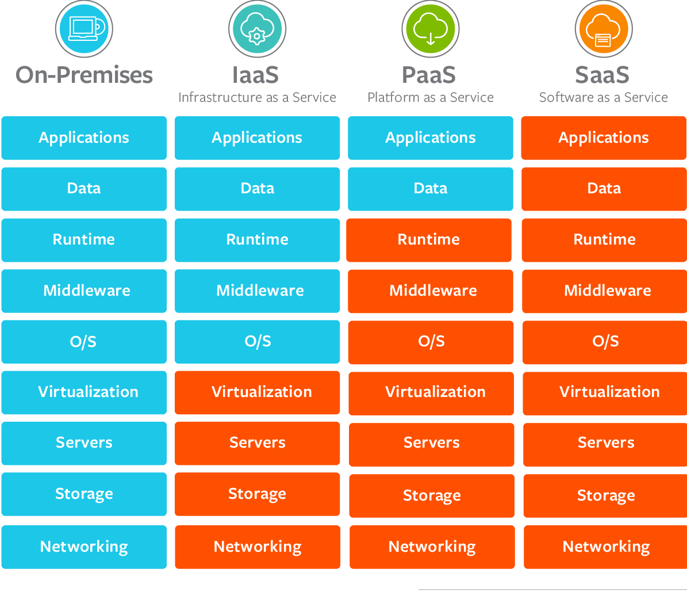

Copyright © 2020 Anirudh Lakra. All Rights Reserved.
From using social media to storing data online, we are increasingly using more and more services that use the internet ("the cloud") in our everyday life. To meet this surge in demand, cloud computing was born. Throughout this article I will talk about what cloud computing is and how it affects you, the different types of cloud computing, the advantages and disadvantages of cloud computing and finally what to expect in the future from cloud computing.
Cloud computing is the delivery of online pay as you go IT resources such as servers, databases, storage, operating systems etc that people from all around the world can access, provided you have an internet connection. Taking advantage of cloud computing is a sure-fire way to increase your productivity since you will have to spend less time managing IT hardware as well as less money investing in hardware. There are numerous advantages that a business or user can gain from using cloud computing and I will talk through them as well as the few disadvantages that cloud computing offers.
Cloud computing is more integrated in everyday life than you realise. Have you used Gmail today? Then you have taken advantage of cloud computing. All the emails that you have on your Gmail account are stored on the cloud rather than on your computer. In fact, a lot of everyday applications such as YouTube, iCloud, or Netflix use cloud computing to allow you to have access to a lot of content even if you don't have to install it or store it locally. The examples given so far are all end user products (a form of SaaS cloud computing). There are three different types of cloud computing and the other forms are a lot more flexible and give the user greater control over the management of resources.
Infrastructure as a Service (IaaS): IaaS provides servers, databases and networking features to users to use. It provides operating systems and servers that users can build and run their applications on. This form of cloud computing offers the most flexibility and the highest level of management over resources and is typically used by system developers. The vendor is responsible for maintaining and operating the hardware while the user can focus on programming the hardware and developing their applications. Examples include Google's Compute Engine (GCE), Microsoft Azure, Amazon's EC2.
Platform as a Service (PaaS): PaaS offers infrastructure that is completely managed by the vendor, removing the need for the user to worry about it. This allows the user to concentrate on developing their application, while also being responsible for managing the data and the resources used by the application. This form of cloud computing is used by developers and examples include AWS Elastic Beanstalk, Windows Azure and Google App Engine.
Software as a Service (SaaS): Finally, SaaS offers applications that have already been developed to end users. These users are everyday people and they are not expected to manage any of the resources, they only need to worry about how they will use the application that is provided. This type of cloud computing is prevalent in everyday life and examples are very well known. Examples include Google Apps, DropBox and Netflix.
The first advantage I will mention is agility. By opting in for a cloud computing service you eliminate the need to manage and invest in IT resources. It is as simple as filling out an online form to sign up and immediately you can develop and use the IT resources available to you. Whereas if you had done it in person, you would first need to figure out which hardware suits your needs the best, then buy it and finally set it up and program it for your purposes. As you can see, cloud computing allows businesses and users to remove time spent managing resources and allows them to quickly build and deploy applications that they have built.
The next big advantage is scalability. Before cloud computing businesses and users would need to overinvest in hardware that can handle peak levels of activity even if that peak level is seldom reached. Since cloud computing is pay as you go, you don't need to worry about overprovisioning IT resources since you can just change the amount you pay to opt in for more or less resources. This cuts costs of production by allowing businesses and users to only pay what is necessary.
Lastly, cloud computing service providers have hardware and warehouses all over the world. This allows users to quickly deploy their applications worldwide and allow their applications to reach people all over the world. This is a massive advantage for users as it increases the number of people who can use their application while also cutting costs since businesses don't need to invest in structuring hardware all over the world.
Since everything related to cloud computing is done via internet, it is no surprise to see that it may be TOO internet reliant. If you live in a location where you don't have access to the internet or have a poor connection, then you will have a very hard time using cloud computing and should consider not using it. This disadvantage is becoming less substantial since more and more areas of the world have an internet connection (5G being released in 2019 and 6G scheduled to be released in 2030).
As a user, you have no idea how secure the IT resources are. The security and data privacy protection are all down to the service provider. This means that if a service provider has poor security and/or allows data to be seen, then all your data being stored on the cloud is vulnerable. Additionally, since the providers often have warehouses at select locations a lot of data of local users is concentrated in one place. If a hacker can gain access to any of the servers at these warehouses, it is possible they can see ALL the data at that warehouse. This disadvantage can be minimized by doing research about cloud computing service providers to see their data protection policy as well as choosing a service provider that is reputable and well known for having good security. Another way of alleviating this issue is to have multiple cloud service providers so your data is distributed rather than being located in one place.
In conclusion, I believe that in the future all businesses will move partly or completely to the cloud. The advantages offered by cloud computing far outweigh the disadvantages, and companies that choose not to move to the cloud will struggle to compete with rival companies that did decide to move to the cloud. Furthermore, cloud computing is still quite new so it may evolve and change so that it is faster, more efficient and secure. The future of cloud computing looks bright indeed.
Copyright © 2020 Anirudh Lakra. All Rights Reserved.